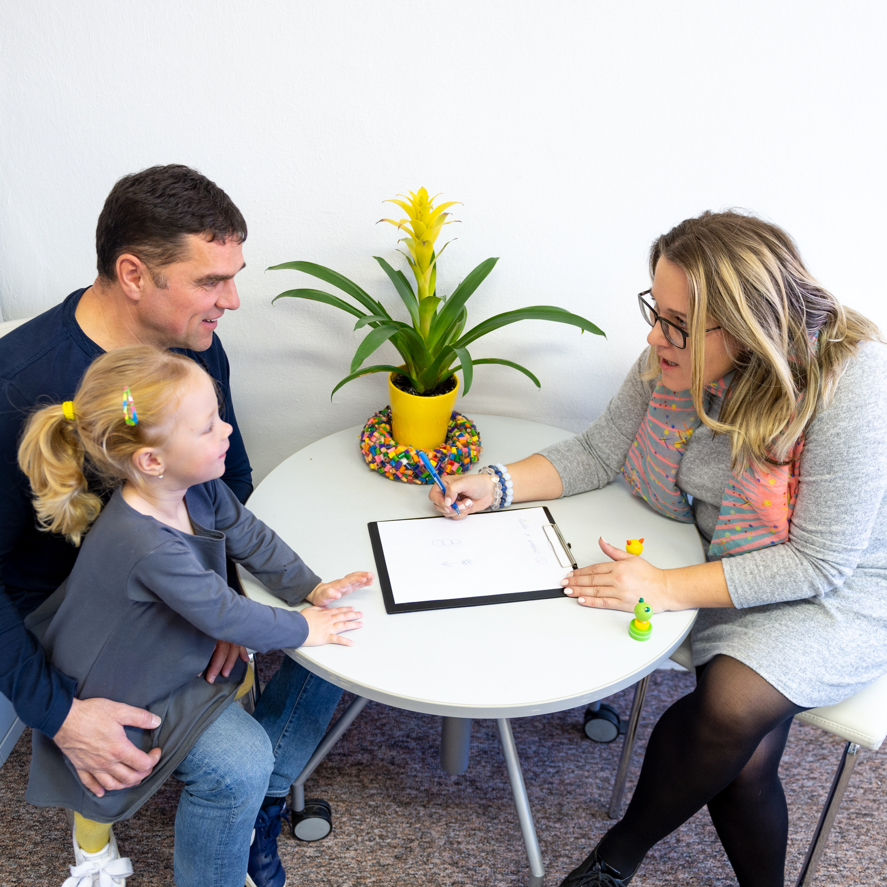

Viele isolierte Einzelstrukturen
Jede Schulbegleitung arbeitet mit eigenen Abstimmungen – parallel und getrennt.
- dieselben Gespräche mehrfach
- Zuständigkeiten überschneiden sich
- wenig Spielraum bei Ausfällen
Infrastrukturelles Pooling
Gemeinsam mit Schulen setzen wir uns dafür ein, dass Teilhabe gelingt und schulische Strukturen entlastet werden. Auf Wunsch unterstützen wir bei Infrastrukturmodellen und Pooling – zielgerichtet, wirksam und am Schulalltag orientiert.
Die Herausforderung
Sind mehrere Schulbegleitungen gleichzeitig in einer Klasse, Jahrgangsstufe oder Schule tätig, entstehen häufig zahlreiche Abstimmungspunkte. Zuständigkeiten überschneiden sich, verfügbare Ressourcen lassen sich nur eingeschränkt einsetzen und kurzfristige Veränderungen sind schwer aufzufangen.
Jede Schulbegleitung arbeitet mit eigenen Abstimmungen – parallel und getrennt.
Abstimmung läuft gebündelt – das Team unterstützt dort, wo im Schulalltag Bedarf entsteht.
Bedarfsbündelung
Im Schulalltag kommt es immer wieder vor, dass in einer Klasse mehrere Schulbegleitungen tätig sind und sich Aufgaben sinnvoll bündeln lassen. Auf Wunsch unterstützen wir Schulen bei der Etablierung von Infrastrukturmodellen oder Pooling-Angeboten – für eine zielgerichtete und effektive Bedarfsbündelung.
Wir stoßen solche Prozesse aktiv an, gehen mit Leistungsträgerinnen und Leistungsträgern sowie Eltern ins Gespräch und setzen uns für praktikable, wirksame und schulalltagstaugliche Lösungen ein, die den Anforderungen Ihrer Schule gerecht werden.
Wo sich Begleitungen und Aufgaben überschneiden, bringen wir die Bedarfsbündelung gezielt in Gang.
Leistungsträger und Eltern werden frühzeitig in die Gespräche einbezogen – nicht erst am Ende.
Es entstehen Lösungen, die im Alltag funktionieren und den konkreten Anforderungen der Schule entsprechen.
Praxisbeispiel
Das folgende Szenario zeigt beispielhaft, wie aus parallelen Einzelbegleitungen eine abgestimmte Struktur entstehen kann. Jedes echte Modell wird individuell mit Schule, Leistungsträgern und Eltern entwickelt.
Illustratives Motiv aus dem unterstützten Schulalltag – keine Abbildung eines konkreten Falls.
In einer Jahrgangsstufe sind drei Schulbegleitungen tätig. In manchen Stunden überschneiden sich Aufgaben, in anderen fehlt kurzfristig Unterstützung – etwa beim Übergang in den Fachraum.
GFI stößt den Prozess an und geht mit Leistungsträgern sowie Eltern ins Gespräch. Bedarfe, Zuständigkeiten und Einsatzzeiten werden zu einem praktikablen Modell zusammengeführt.
Abstimmungen laufen gebündelt. Vorhandene Begleitung kann gezielter dort eingesetzt werden, wo sie im Schulalltag gerade gebraucht wird.
Unser Anspruch
Teilhabe gelingt, wenn schulische Strukturen entlastet und Verantwortung klar geteilt wird.
Ihr Nutzen
Statt paralleler Einzellösungen entsteht eine abgestimmte Organisation, die den Tagesablauf entlastet.
Vorhandene Begleitungskapazitäten werden dort eingesetzt, wo sie im Schulalltag tatsächlich gebraucht werden.
Schule und Kollegium gewinnen Flexibilität bei wechselnden Situationen – ohne zusätzliche Schnittstellen.
Wann es passt
Besonders relevant wird ein Infrastrukturmodell, wenn:

Mehr zur Zusammenarbeit mit Institutionen finden Sie auf der Seite Für Schulen & Ämter.
Von der Idee zur Umsetzung
Wir lernen die Schule, die bestehende Situation und die wichtigsten Herausforderungen kennen.
Gemeinsam betrachten wir vorhandene Unterstützungsbedarfe, aktuelle Begleitstrukturen, Kommunikationswege und organisatorische Rahmenbedingungen.
Auf dieser Grundlage entsteht ein Pooling-Konzept mit Rollen, Zuständigkeiten, Teamstruktur und Abstimmungswegen.
Das Konzept wird mit Schule, Leistungsträgern und – soweit erforderlich – Eltern beziehungsweise weiteren Beteiligten abgestimmt.
Mitarbeitende werden vorbereitet, Verantwortlichkeiten geklärt und die vereinbarten Prozesse in den Schulalltag übertragen.
Das Modell wird regelmäßig betrachtet, gemeinsam ausgewertet und bei veränderten Bedarfen weiterentwickelt.
Vorteile für Kooperationsschulen
Kooperation bedeutet für uns mehr als gute Zusammenarbeit. An Schulen, an denen wir besonders aktiv sind, stellen wir zusätzliche Leistungen bereit – damit Teilhabe gelingt und das Kollegium spürbar entlastet wird.
Vertretungseinsätze im Krankheitsfall werden priorisiert für Ihre Kooperationsschule organisiert. Bei längeren Ausfällen steht eine möglichst konstante Vertretung bereit – ohne häufige Wechsel. In der Praxis kann so bis zu 50 % mehr Vertretung gewährleistet werden als an regulären Schulen.
Ihr Nutzen
An Kooperationsschulen sind wir in der Regel mit mehr als zehn Mitarbeitenden aktiv. Eine feste Fachperson steht Ihnen für fachlich-inhaltliche und organisatorische Themen zur Seite – mit Studium, langjähriger Erfahrung und Expertise etwa zu ADHS oder Autismus. Das Profil erhalten Sie selbstverständlich.
Ihr Nutzen
Einmal jährlich erhalten Sie den Schulungskatalog. Ihre Lehrkräfte melden sich eigenständig an – Themen von Autismus und ADHS über Kinderschutz bis zum Umgang mit herausfordernden Verhaltensweisen. Das Kontingent: 200 digitale Weiterbildungsstunden, kostenlos für Kooperationsschulen.
Ihr Nutzen
Sofort einsetzbare Materialien für Schulbegleitungen und Lehrkräfte – zusammengestellt für Sensorik und Motorik, Kognition, Selbstregulation, sozial-emotionale Entwicklung und Kommunikation.
Ihr Nutzen
Orientierung
Pooling bezeichnet die Bedarfsbündelung vor Ort – also die gemeinsame Organisation von Unterstützungsstrukturen. Eine Kooperationsschule ist darüber hinaus ein verbindliches Partnerschaftsmodell mit zusätzlichen Leistungen wie Vertretungspool, fester Ansprechperson, Akademie-Kontingent und Inklusionskoffern.
Sobald wir mit mindestens zehn Schulbegleitungen an Ihrer Schule aktiv sind, können wir die nächsten Schritte gemeinsam angehen: Inhalte der Vereinbarung abstimmen, Austauschformate festlegen und Erwartungen an die Zusammenarbeit klären.
Ja. Bei der Etablierung von Infrastrukturmodellen gehen wir auf Wunsch mit Leistungsträgerinnen und Leistungsträgern sowie Eltern ins Gespräch – damit praktikable und tragfähige Lösungen entstehen.
Ihre Schule wird in den exklusiven Vertretungspool aufgenommen, Zugänge zum Schulungskatalog werden freigeschaltet, Inklusionskoffer bereitgestellt und eine feste Ansprechperson steht für alle Belange rund um die Schulbegleitung zur Seite.
Ja. Bedarfsbündelung ersetzt keine individuelle Unterstützung – sie organisiert vorhandene Ressourcen so, dass sie im Schulalltag wirksamer greifen und trotzdem bedarfsgerecht bleiben.
Nächster Schritt
Schreiben Sie uns kurz Ihre Ausgangssituation. Wir melden uns mit einem unverbindlichen Gespräch und den nächsten möglichen Schritten – von der Bedarfsbündelung bis zur Kooperationsvereinbarung.
Nach Ihrer Anfrage meldet sich eine zuständige Ansprechperson mit den nächsten möglichen Schritten.
Die Formularvalidierung war erfolgreich. Der serverseitige Versand ist noch nicht angebunden
(data-endpoint fehlt). Bitte kontaktieren Sie uns vorübergehend telefonisch unter
0721/61930339 oder per E-Mail an
info@gfi-baden.de.